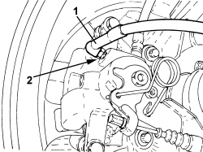
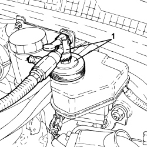

0010T62 BRAKE AND/OR CLUTCH FLUID - REPLACE FLUID INCLUDES WASHING PIPES AND BLEEDING AIR
- Path
- Procedures > 00 MAINTENANCE > 0010 NEW VEHICLES AND MAINTENANCE > 0010T VEHICLE FLUIDS > 0010T62 BRAKE AND/OR CLUTCH FLUID - REPLACE FLUID INCLUDES WASHING PIPES AND BLEEDING AIR
- Kind
- repair procedure (removal / refitting; the operation number is the code)
- Applies to
- all engines; all production periods
- Interactive page
- https://sloeber94.github.io/elrnDB-aBrrSpdr/en/#/946002940
Applies to: all engines; all production periods
- Position the vehicle on a lift.
- Draw off the brake/clutch fluid from the reservoir using a suitable syringe.
- Remove the protective cap from the bleed valve on one brake calliper.
1. Connect the recovery device (pipe and reservoir) to the bleed valve on the brake calliper.
2. Open the bleed valve on the brake calliper.

Applies to: all engines; all production periods
- Pump the brake pedal until all the fluid emerges.
- Repeat the operations described above for the remaining brake callipers.
1. Connect the tool to the brake/clutch fluid reservoir.

Applies to: all engines; all production periods
- Slowly open the device reservoir cock and refill the brake/clutch systems with the recommended fluid.
Component | Type | Description | Classification | Qty. | Validity |
|---|---|---|---|---|---|
Hydraulic brake and clutch fluid circuit | Fluid [kg] | TUTELA TOP 4 | FMVSS n. 116 - DOT 4 - ISO 4925 - SAE J-1704 - CUNA NC 956-01 | 0.50 |
- Wait for all the air in the hydraulic system to emerge completely.
- Close the bleed valves on the brake callipers and fit protective plugs.
- Remove the fluid recovery devices.
- Remove the equipment used.
- Check the efficiency of the braking system.
- Remove the vehicle from the lift.